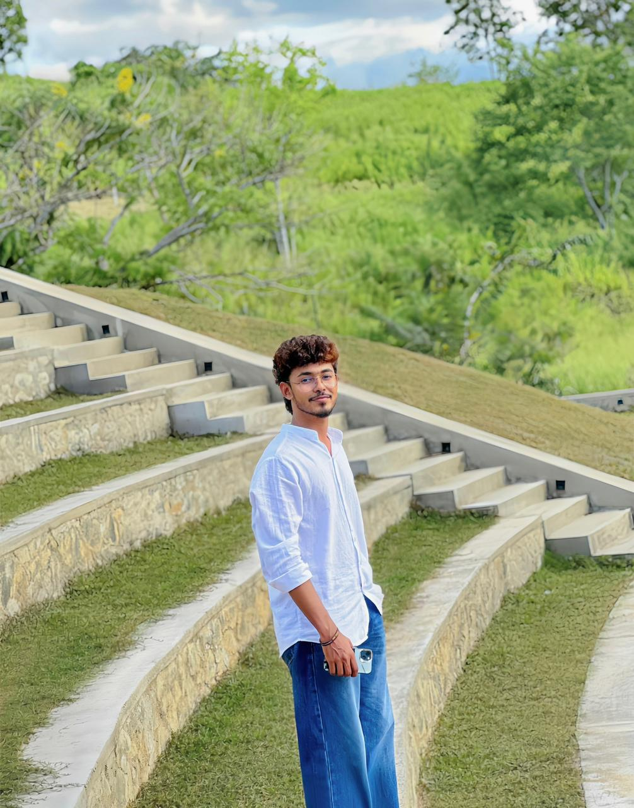

01
Plan
Identify the pages, content, restaurant style and required user interactions.
A short introduction to the designer and developer of this restaurant project.

I am the creator of this restaurant website and an ICT student at Uva Wellassa University of Sri Lanka. I built this project to demonstrate how HTML, CSS and JavaScript can be combined to create a modern, responsive and visually engaging website.
My approach was to use a luxury restaurant style with large food images, elegant typography, smooth scroll animations, interactive menu filters, a gallery lightbox, mobile navigation and a light/dark theme switcher. The layout was carefully designed to work well on desktop, tablet and mobile devices.
The project uses semantic HTML for structure, CSS variables and responsive layouts for visual styling, and JavaScript for user interaction and scroll-based behaviour.

A simple four-step workflow was used to organise the project.
Identify the pages, content, restaurant style and required user interactions.
Create reusable page sections, navigation, footer content and semantic HTML.
Apply responsive grids, attractive images, typography, themes and animations.
Add JavaScript filtering, lightbox viewing, validation and scroll effects.